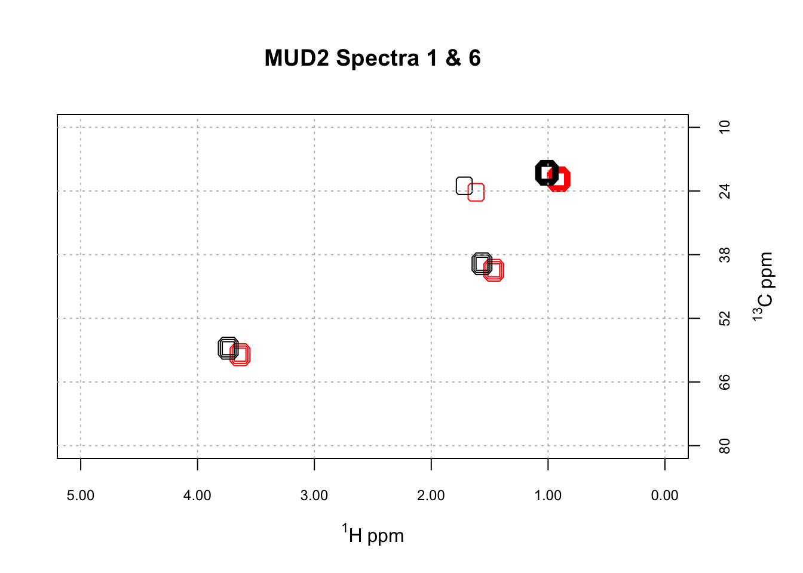

Aligning 2D NMR Spectra Part 1
In this series of posts, I’ll discuss the alignment process for the case of 2D NMR, as implemented in the package ChemoSpec2D. This is Part 1. Part 2. Part 3.

In one-dimensional \(^1\)H NMR spectroscopy, particularly biomolecular NMR, it is frequently necessary to align spectra before chemometric or metabolomics analysis. Poor alignment arises largely from pH and ionic strength induced shifts in aqueous samples. There are a number of published alignment algorithms for the one-dimensional case. The same issue presumably exists for 2D NMR spectra, but alignment options are limited. Instead, for 2D NMR people often work with tables of peaks. Creating these tables is an extra step and decisions about what to include may leave useful information behind.
No doubt you’ve compared two spectra by overlaying them on the screen, or printing them out, placing them on top of each other, and holding them up to the light. Conceptually, one can “align” spectra by a similar method: just slide one of the pieces of paper up/down and left/right until the spectra are optimally aligned. But how would one do this algorithmically? A literature searched turned up only a few publications on this topic. Among these, there was only one that I felt I could implement using the description in the paper: the HATS-PR algorithm of Robinette et al. (Robinette et al. 2011).
We’ll discuss the HATS algorithm in a future post. As a first step however, we need to consider how we know when two spectra are properly aligned. Visual inspection won’t work, as we will encounter cases where peaks in one region align, but only at the expense of peaks in another region. How would we rank such cases? To automate this process, we need to use an objective function, basically some kind of equation, that we evaluate as we explore the alignment space. A simple but effective option is to compute the distance between the two spectra. This is done by concatenating each row of the 2D spectra to give a long vector of intensities. The distance between these vectors can then be computed using any of the standard distance definitions. Let’s illustrate, starting by taking a look at some mis-aligned data. ChemoSpec2D contains a mis-aligned data set, MUD2, for just this purpose. Here are two spectra from MUD2; note we are using the new convenience functions LofC and LofL to make it easy to overlay the spectra.
Loading required package: ChemoSpecUtils
As of version 6, ChemoSpec2D offers new graphics output options
Functions plotScores and plotScree will work with the new optionsFor details, please see ?GraphicsOptions
The ChemoSpec graphics option is set to 'ggplot2'To change it, do
options(ChemoSpecGraphics = 'option'),
where 'option' is one of 'base' or 'ggplot2' or'plotly'.data(MUD2)
mylvls <- seq(0, 30, length.out = 10)
plotSpectra2D(MUD2, which = c(1, 6), showGrid = TRUE,
lvls = LofL(mylvls, 2),
cols = LofC(c("red", "black"), 2, length(mylvls), 2),
main = "MUD2 Spectra 1 & 6")
The function sampleDist allows us to compute the distance between every pair of spectra in the MUD2 data set, and present the results as a heat map. Here are the results using cosine as the distance measure.
The actual numerical values are in cos_dist, a matrix. Looking at the heatmap, there are some modest differences among the spectra. However, if one looks at the scale, cosine distances are only defined on [-1 … 1]. While the cosine distance is popular in many spectroscopic contexts, it’s not the best objective function for our purpose because there is little absolute difference between -1 and 1 (and for MUD2 the absolute differences are even smaller, as the range is only 0, 0.99). This limited range affects the alignment process in a subtle way that we won’t cover here (alignment is still successful, however).
Let’s consider instead the Euclidean distance.
It turns of that the Euclidean distance gives a wider span of distances, which will serve us well in the next steps. Here, the range is roughly 80, 150. Note that in this plot the distance between identical spectra is zero, plotted as a white squares along the diagonal. When we used cosine as the distance, identical spectra were perfectly correlated and hence the diagonal in that plot was red.
In the next post I’ll discuss the general flow of the HATS algorithm, and how to carry it out using ChemoSpec2D.
References
Reuse
Citation
@online{hanson2020,
author = {Bryan Hanson},
title = {Aligning {2D} {NMR} {Spectra} {Part} 1},
date = {2020-02-20},
url = {http://chemospec.org/posts/2020-02-20-NMR-Align-Pt1/2020-02-20-NMR-Align-Pt1.html},
langid = {en}
}